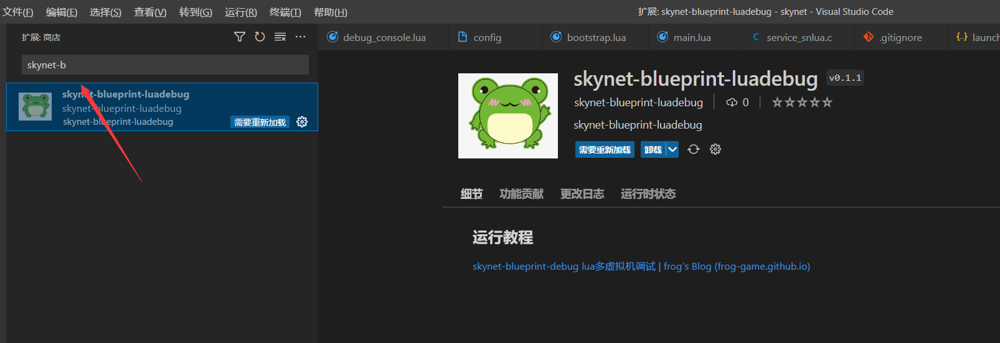
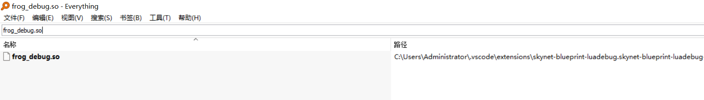
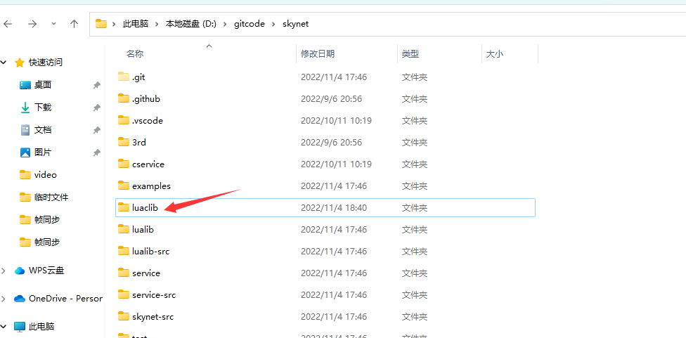
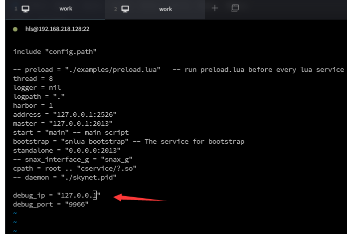
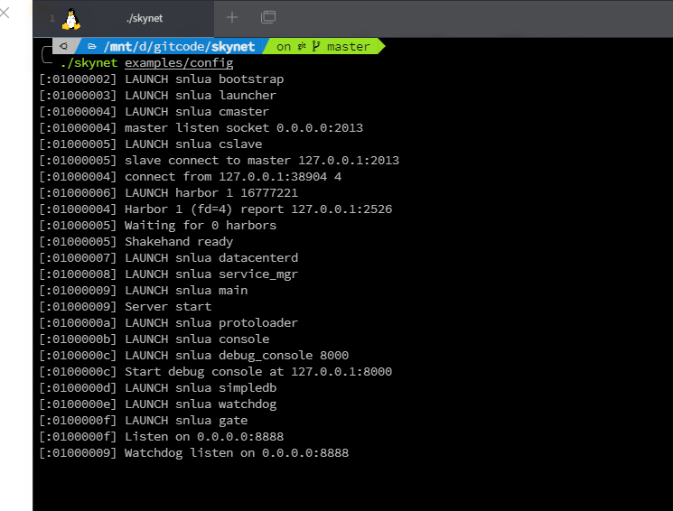

在service_snlua.c 中增加此函数
void addLuaState(struct snlua *l,const char *debug_ip,const char * debug_port)
{
if (NULL == debug_ip)
{
return;
}
if (NULL == debug_port)
{
return;
}
int port = strtol(debug_port, NULL, 10);
const char *lua_dofunction = "function snlua_addLuaState()\n"
"local dbg = require('frog_debug')\n"
"dbg.startDebugServer('%s', %d)\n"
"dbg.addLuaState()\n"
"end"
"";
char loadstr[200];
sprintf(loadstr, lua_dofunction,
debug_ip, port);
int oldn = lua_gettop(l->L);
int status = luaL_dostring(l->L, loadstr);
if (status != 0)
{
const char *ret = lua_tostring(l->L, -1);
lua_settop(l->L, oldn);
skynet_error(l->ctx, "[ERROR] addLuaState lua_tostring error!! err:%s",
ret);
return;
}
lua_getglobal(l->L, "snlua_addLuaState");
if (!lua_isfunction(l->L, -1))
{
const char *ret = lua_tostring(l->L, -1);
lua_settop(l->L, oldn);
skynet_error(
l->ctx,
"[ERROR] addLuaState lua_getglobal addLuaState error!! err:%s",
ret);
return;
}
status = lua_pcall(l->L, 0, 0, 0);
if (status != 0)
{
const char *ret = lua_tostring(l->L, -1);
lua_settop(l->L, oldn);
skynet_error(l->ctx,
"[ERROR] addLuaState lua_pcall addLuaState error!! err:%s",
ret);
return;
}
}
将addLuaState函数插入到service_snlua.c对应位置
static int
init_cb(struct snlua *l, struct skynet_context *ctx, const char * args, size_t sz) {
lua_State *L = l->L;
l->ctx = ctx;
lua_gc(L, LUA_GCSTOP, 0);
lua_pushboolean(L, 1); /* signal for libraries to ignore env. vars. */
lua_setfield(L, LUA_REGISTRYINDEX, "LUA_NOENV");
luaL_openlibs(L);
luaL_requiref(L, "skynet.profile", init_profile, 0);
int profile_lib = lua_gettop(L);
// replace coroutine.resume / coroutine.wrap
lua_getglobal(L, "coroutine");
lua_getfield(L, profile_lib, "resume");
lua_setfield(L, -2, "resume");
lua_getfield(L, profile_lib, "wrap");
lua_setfield(L, -2, "wrap");
lua_settop(L, profile_lib-1);
lua_pushlightuserdata(L, ctx);
lua_setfield(L, LUA_REGISTRYINDEX, "skynet_context");
luaL_requiref(L, "skynet.codecache", codecache , 0);
lua_pop(L,1);
lua_gc(L, LUA_GCGEN, 0, 0);
const char *path = optstring(ctx, "lua_path","./lualib/?.lua;./lualib/?/init.lua");
lua_pushstring(L, path);
lua_setglobal(L, "LUA_PATH");
const char *cpath = optstring(ctx, "lua_cpath","./luaclib/?.so");
lua_pushstring(L, cpath);
lua_setglobal(L, "LUA_CPATH");
const char *service = optstring(ctx, "luaservice", "./service/?.lua");
lua_pushstring(L, service);
lua_setglobal(L, "LUA_SERVICE");
const char *preload = skynet_command(ctx, "GETENV", "preload");
lua_pushstring(L, preload);
lua_setglobal(L, "LUA_PRELOAD");
lua_pushcfunction(L, traceback);
assert(lua_gettop(L) == 1);
const char * loader = optstring(ctx, "lualoader", "./lualib/loader.lua");
int r = luaL_loadfile(L,loader);
if (r != LUA_OK) {
skynet_error(ctx, "Can't load %s : %s", loader, lua_tostring(L, -1));
report_launcher_error(ctx);
return 1;
}
lua_pushlstring(L, args, sz);
r = lua_pcall(L,1,0,1);
if (r != LUA_OK) {
skynet_error(ctx, "lua loader error : %s", lua_tostring(L, -1));
report_launcher_error(ctx);
return 1;
}
lua_settop(L,0);
if (lua_getfield(L, LUA_REGISTRYINDEX, "memlimit") == LUA_TNUMBER) {
size_t limit = lua_tointeger(L, -1);
l->mem_limit = limit;
skynet_error(ctx, "Set memory limit to %.2f M", (float)limit / (1024 * 1024));
lua_pushnil(L);
lua_setfield(L, LUA_REGISTRYINDEX, "memlimit");
}
lua_pop(L, 1);
addLuaState(l, optstring(ctx, "debug_ip", NULL), optstring(ctx, "debug_port", NULL));//调用函数放到这里
lua_gc(L, LUA_GCRESTART, 0);
return 0;
}
去vscode插件商场下载此插件并安装

远程调试
用everthing 找到 frog_debug.so

然后放到luaclib目录下上传到服务器

在config里面加上两个字段
debug_ip = "127.0.0.1"
debug_port = "9966"

重编skynet代码
cd skynet
make linux MALLOC_STATICLIB= SKYNET_DEFINES=-DNOUSE_JEMALLOC
在vscode上按如下填写

创建launch.json文件
{
// 使用 IntelliSense 了解相关属性。
// 悬停以查看现有属性的描述。
// 欲了解更多信息，请访问: https://go.microsoft.com/fwlink/?linkid=830387
"version": "0.2.0",
"configurations": [
{
"type": "lua_remote",
"request": "launch",
"name": "远程调试",
"host": "localhost",
"port": 9966,
"ext": [
".lua",
".lua.txt",
".lua.bytes"
],
"ideConnectDebugger": true
}
]
}
我用的是wsl2,直接到你的skynet目录下启动

如果嫌弃麻烦,可以在github直接下载example
example地址:https://github.com/frog-game/skynet-blueprint-debug.git
然后按 6到8步骤执行就可以进行调试了